Exterior comparisons
Approximate corresponding viewpoints, not solved camera matches. Original screenshots remain unchanged with their Google attribution. Compare openings, canopy and parapet silhouette; tree shapes and surfaces are placeholders.
Corrected entrance
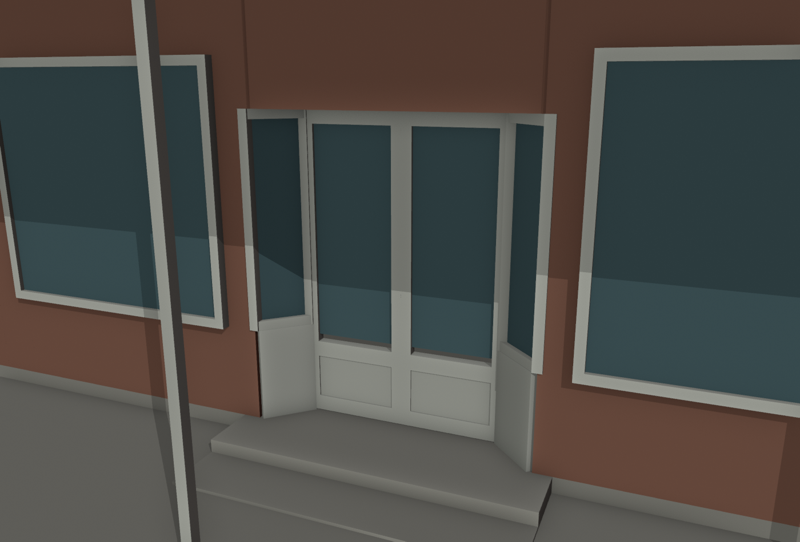
One angled pane on each side meets the door frame directly. No intermediate window bay. The return angle is 45 degrees; the provisional recess is 0.305 m.Front
 G04 / undated crop consistent with Nov 2025 set · unchanged photographic evidence
G04 / undated crop consistent with Nov 2025 set · unchanged photographic evidence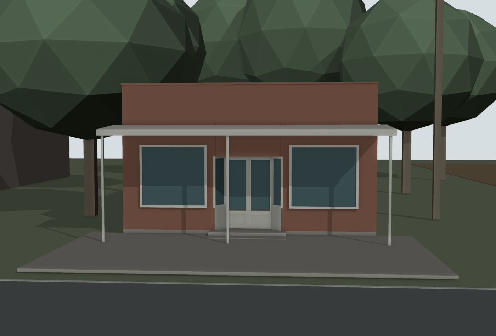
V2 first-pass front · provisional dimensionsFront Left
 G02 / November 2025 shown in UI · unchanged photographic evidence
G02 / November 2025 shown in UI · unchanged photographic evidence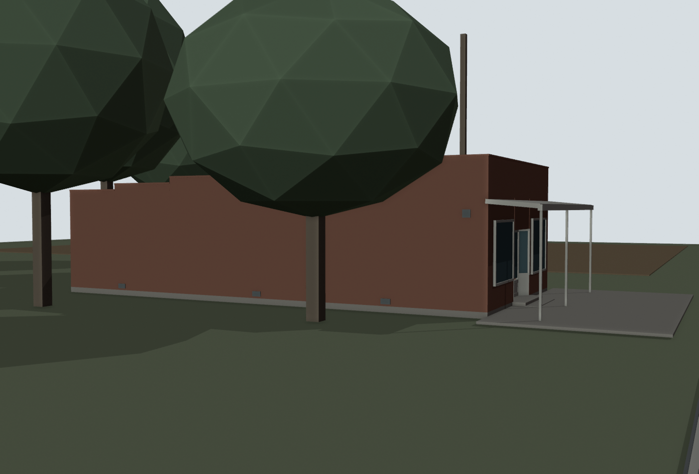
V2 first-pass front-left · provisional dimensionsFront Right
 G05 / November 2025 shown in UI · unchanged photographic evidence
G05 / November 2025 shown in UI · unchanged photographic evidence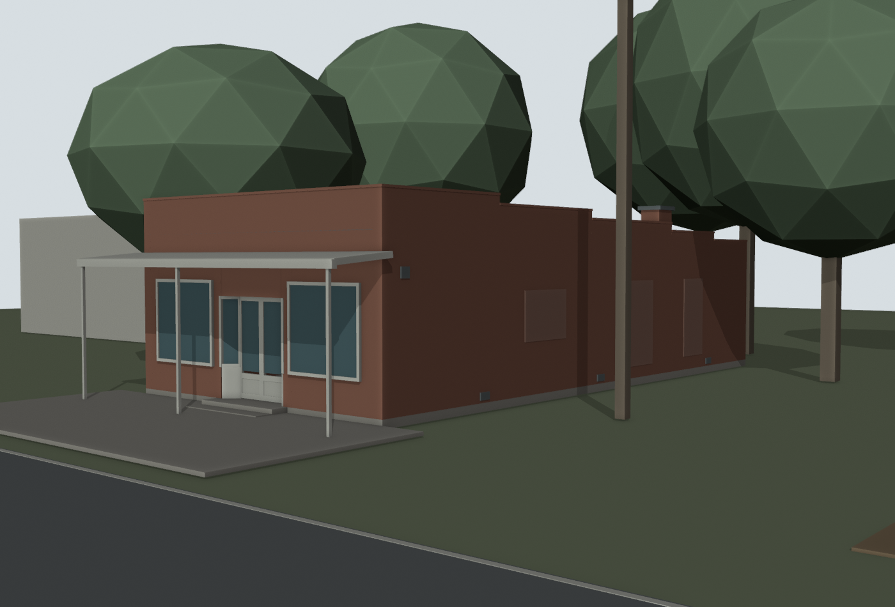
V2 first-pass front-right · provisional dimensionsDimensioned layout
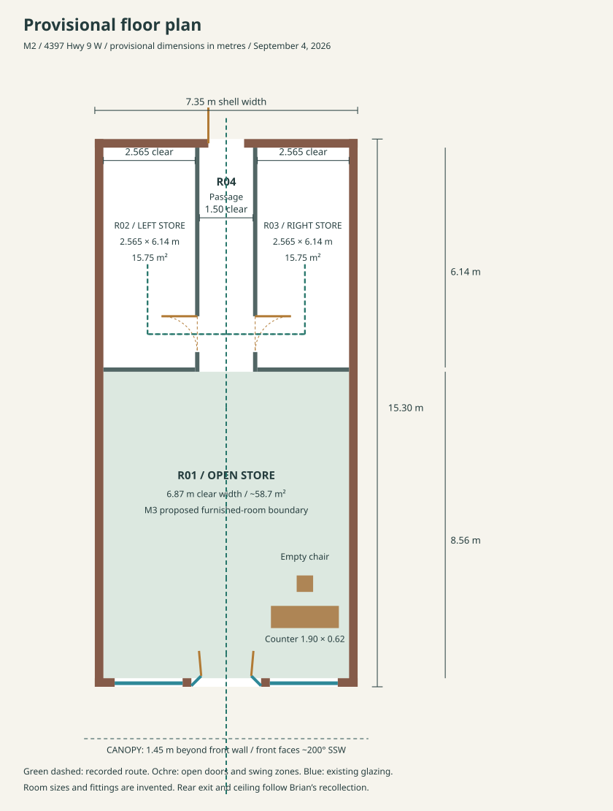
Open full plan · shell 7.35 × 15.30 m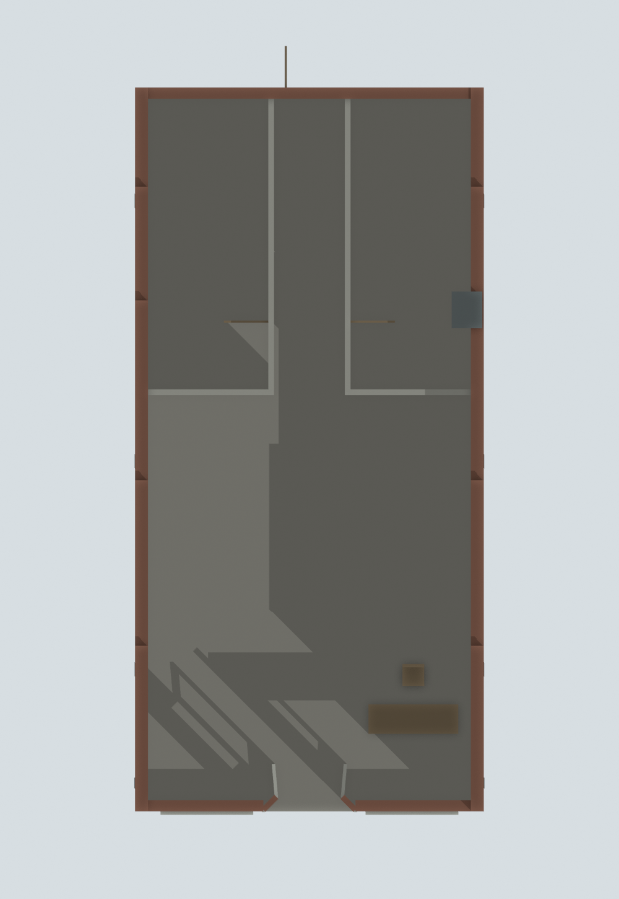
Blender cutaway: roof, ceiling and canopy hidden; doors open.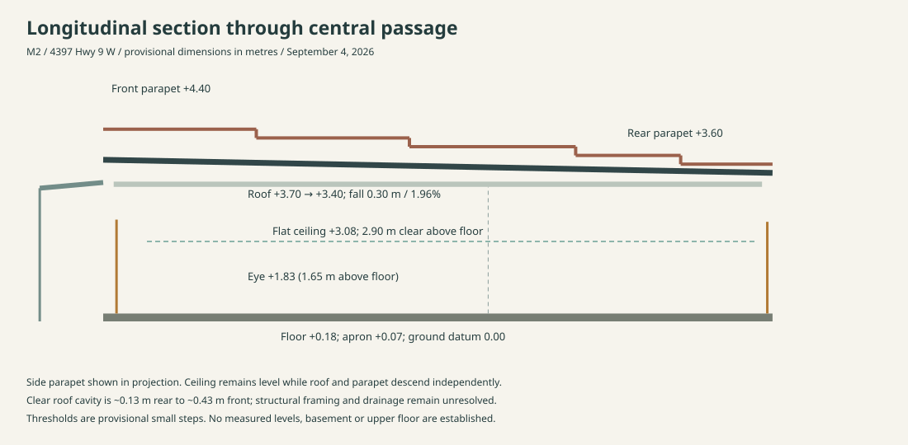
Open section · floor, ceiling, roof and parapet levels are separate assumptions.Room and opening schedules
Rooms CSV · Openings CSV
| Room | Clear dimensions | Area |
|---|
| R01 · Open store | 6.87 clear width × 8.56 maximum clear depth | ~58.7 m² |
| R02 · Left storeroom | 2.565 × 6.14 | 15.75 m² |
| R03 · Right storeroom | 2.565 × 6.14 | 15.75 m² |
| R04 · Rear passage | 1.50 × 6.26 | 9.39 m² |
Walking-height interior
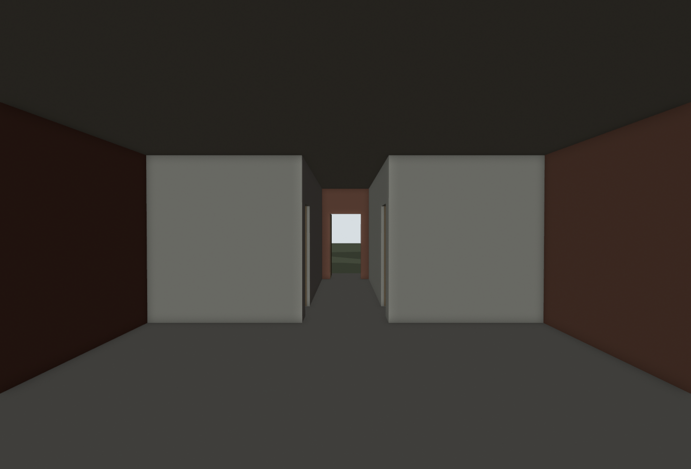
Entry to central passage and centered rear exit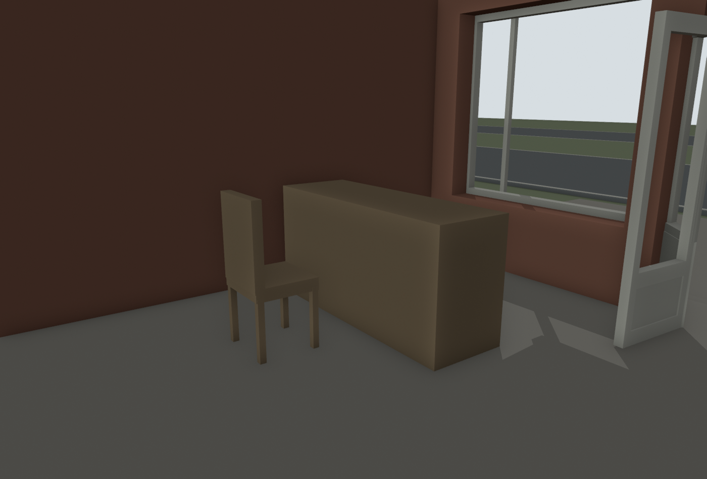
Empty front-right chair on the staff side of the counter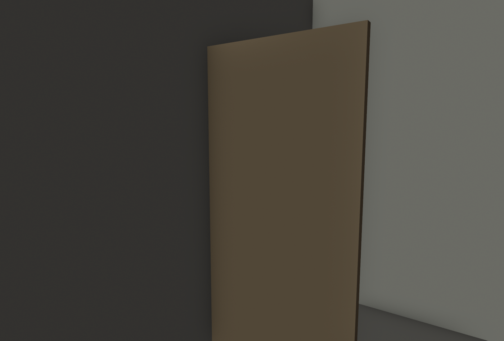
Left storeroom looking toward its passage door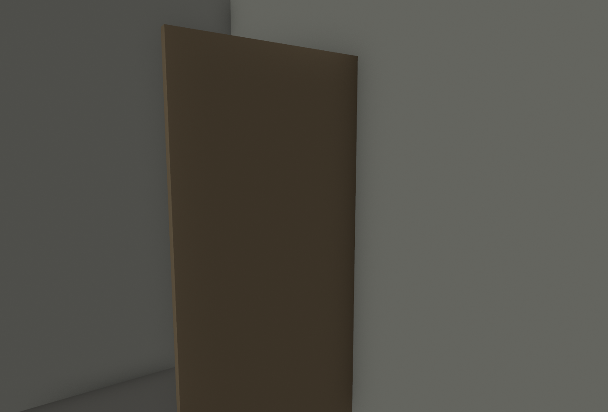
Right storeroom looking toward its passage doorRecorded circulation
73.4 seconds · eye 1.65 m above floor · all rooms visited · 587 route samples checked with a 0.50 m diameter body and no wall, furniture or open-door overlap. Check details.
The paired front doors open during the approach, showing that the moving glazed panels are door leaves. Each fixed entrance return is a single 45-degree pane ending at its door jamb. Workbench glass hides after frame 40 for interior visibility. This recording checks layout; browser collision and functional interactions belong to M3.
Approved operable-window approach
Use W04, the existing right-hand angled glazed entrance return. Keep its full visible pane and opening perimeter, with a concealed top hinge allowing a limited 15° inward tilt. A 1.49 m pane would move about 0.39 m inward at its bottom. Brian explicitly approved this invented mechanism. Detailed construction and operation remain M3 work. Retain closed right-side masonry infill. M3 must check hinge/frame clearances, door separation and safe reach.
M3 proposed boundary
The entire R01 front store up to the partitions at y=8.8 m, including floor and flat ceiling, chair/counter, paired entrance doors, display windows and returns. Exterior: complete front facade and canopy, apron to y=-4.7 m, and side returns to y=3.5 m. Rear rooms and the rest of the site remain blockout context. Use this boundary when refining the M3 checklist and performance budgets at kickoff.
Immediate setting
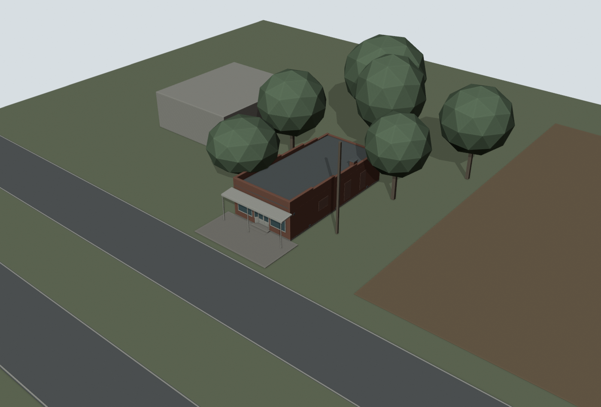
Local +Y points rearward (~020°), +X toward the right side (~110°). Neighbor at local left/rear (NW), field at right (E), divided highway in front (SSW). Distances and tree masses are provisional.